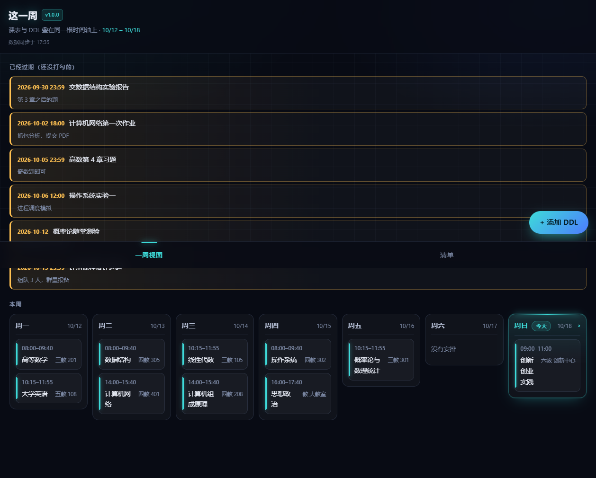

v1.0.0 = commit 7c6bdbd
｜ 回滚目标 ef2fa36（Day 24）
| 环节 | 结果 |
|---|---|
| 发布 v1.0 | ✅ 8/8 全绿，公网可访问，页面上显示 v1.0.0 |
| 回滚演练 | ✅ 成功 · 上传用时 4 秒（含导出/校验/确认约 15 秒） |
| 恢复 v1.0 | ✅ 成功 · 上传用时 4 秒，页面重新显示 v1.0.0 |
tcb hosting deploy 的帮助原文：no version management），
云函数那套 publish-version / config-route 在这儿一个都用不了。
所以"回滚"= 拿旧 commit 的文件重新传一遍，没有"点一下回去"的安全网。

7c6bdbd (HEAD -> main, tag: v1.0.0, origin/main, origin/HEAD) Day 26｜发布 v1.0.0：页面显示版本号 + 静态托管回滚脚本 3461c7e Day 25｜补交付说明与收尾验证截图 378eb57 Day 25｜修发布前检查自身的两处问题（收尾验证抓出来的） 6e08863 Day 25｜新增发布前检查 Skill：8 项逐项带实测值 ef2fa36 Day 24｜修复删除/编辑/勾选失败时界面完全静默的 Bug ← 回滚目标 b732ab3 Day 23｜密钥排查 + 三类错误提示统一 00485c2 Day 22｜PATCH / DELETE 上线：四类操作闭环打通 dbd7893 Day 21｜第 3 周验收：28 条逐项判定，缺项如实标 FAIL
v1.0.0 和
回滚手册里记的时间点 + 目标 commit。